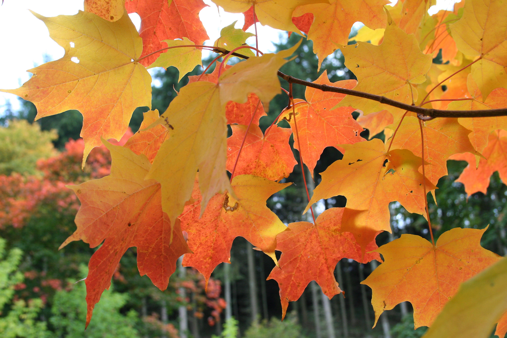

Полотно «Март» было представлено на 24-й выставке Товарищества передвижных художественных выставок («передвижников»), открывшейся в феврале 1896 года в Санкт-Петербурге, а в марте того же года переехавшей в Москву. «Март» также экспонировался на Всероссийской промышленной и художественной выставке 1896 года в Нижнем Новгороде. В том же 1896 году картина была приобретена у автора Павлом Третьяковым. «Март» относят к серии «жизнеутверждающих, бодрых произведений» Левитана 1895—1897 годов, в которую, кроме него, включают картины «Золотая осень» (1895), «Свежий ветер. Волга» (1895), «Весна. Большая вода» (1897) и другие. Полотно «Март» считается одним из наиболее известных и ярких образцов пейзажного наследия Левитана. Оно также служит примером влияния импрессионизма на творчество художника. Художник Василий Бакшеев писал, что картина «Март» является не только одной из лучших работ Левитана, но и одним из лучших произведений русской школы живописи. По словам искусствоведа Алексея Фёдорова-Давыдова, левитановский «Март», сочетающий в себе живописное изображение снега, весеннего неба и деревьев, явился «открытием в русской пейзажной живописи», а впоследствии этот мотив стал популярной темой у многих русских пейзажистов XX века — Игоря Грабаря, Константина Юона и других. Искусствовед Фаина Мальцева называла «Март» «мажорным и вдохновенным произведением» и писала, что в нём представлен «цельный и внутренне завершённый образ, сохранивший вместе с тем всю непосредственность и свежесть первых впечатлений».
 Внутрення ссылка